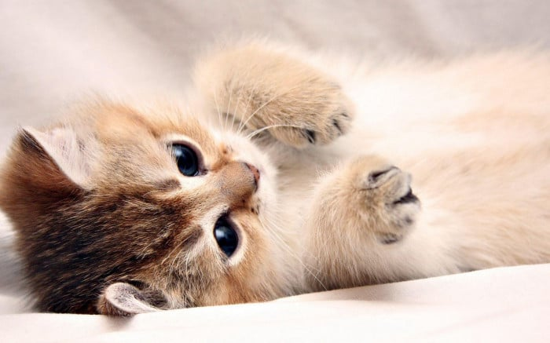
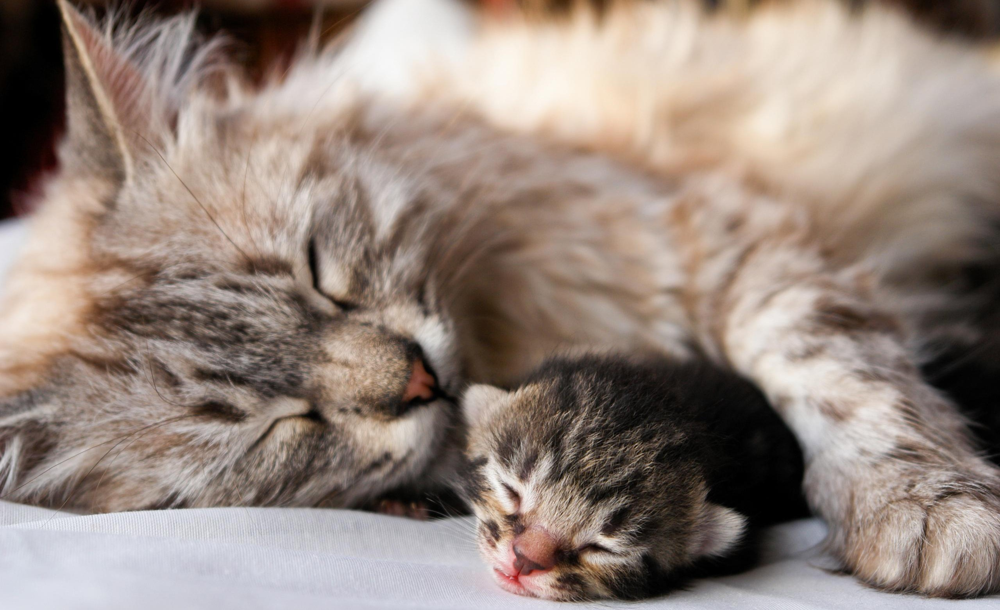

Somos o primeiro hospital veterinário da América Latina a ser acreditado.
A Clinica top é o primeiro hospital em toda a América Latina a receber a certificação, sendo esta realizada pela Associação Brasileira de Hospitais Veterinários, a ABHV. Ao receber essa certificação, a clinica top é

Investimos em tecnologia de ponta.
Colocamos os melhores equipamentos à disposição da saúde e do bem-estar de nossos pacientes. Sempre nos mantemos fiéis à ideologia de nosso fundador, o médico veterinário Marcio Fred Danson, que é buscar oferecer um tratamento diferenciado, em um espaço que comporte tanto a clínica médica quanto a cirúrgica, além das mais variadas especialidades.